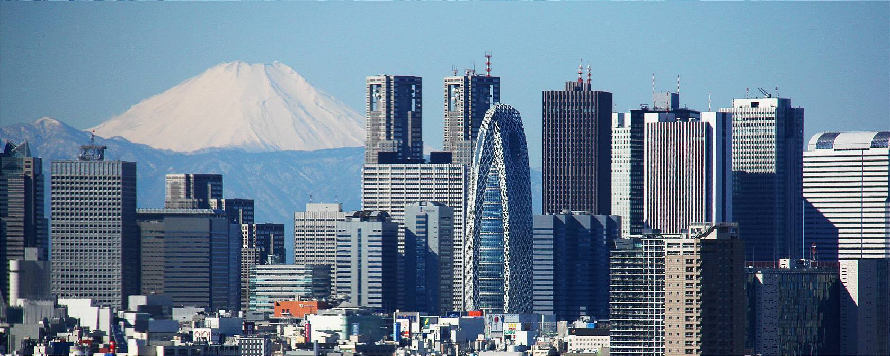
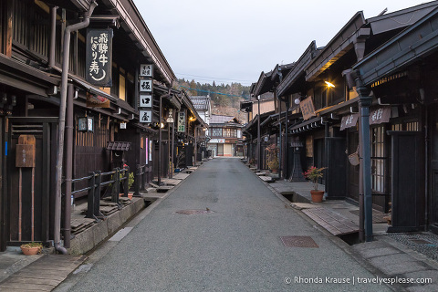
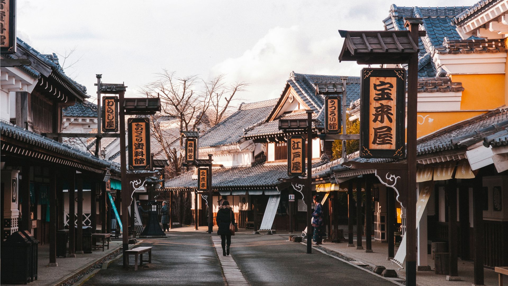

Japan, unlike most countries, has regions instead of states.
Some of the most popular regions are,
Kanto, which is home to Tokyo,
which is the capitol of Japan,

Chubu, which is home to Mt. Fuji,

and Hokkaido is also popular because of how beautiful it is.
Some people (my Japanese teacher), call it the Utah of Japan.
Hokkaido is surrounded by nature, which makes it a very nice area to live in and visit.
